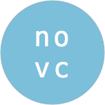

Normative Organization of Viable Cooperation
Background
The continued growth and consolidation of surveillance capitalist "tech giants" is unsustainable and dangerous. In addition to identifying alternatives to their services, we can find out more about what non-scaling orgs (small businesses, non-profits, cooperatives, co-ops, and local government groups) really need from technology.
Plan
- We're taking a survey on tech needs and capabilities of companies and organizations that aren't venture-backed.
- Aggregate actionable survey results will be revealed. An example of this would be highlighting programming technologies or processes for increased social impact.
- With permission, individual organizations will be highlighted to demonstrate general trends.
Do you work in tech/not backed by venture capital?
Please, take the survey!
Questions or comments?
Email us.